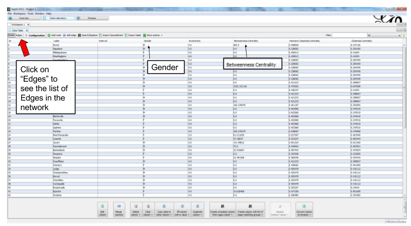
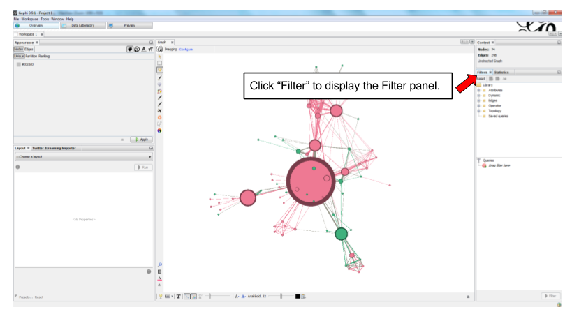
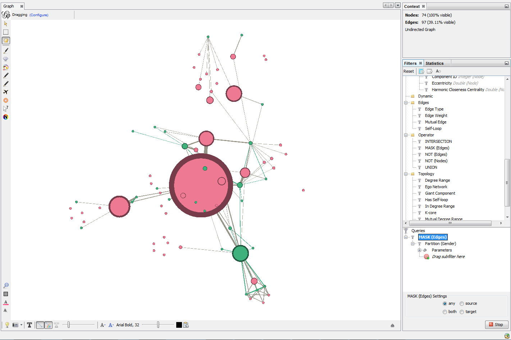

L.*Using filters
last modified: 2017-02-17
'Escape' or 'o' to see all sides, F11 for full screen, 's' for speaker notes
download a network file for practice
download this zip file and unzip it on your computer.
or use this direct link: https://tinyurl.com/gephi-tuto-3
You should find the file miserables.gexf in it. Save it in a folder you will remember (or create a folder specially for this small project).
description of the file / the network
This file contains a network representing "who appears next to whom" in the 19th century novel Les Misérables by Victor Hugo[1].
A link between characters A and B means they appeared on the same page or paragraph in the novel.
The file name ends with ".gexf", which just means this is a text file where the network information is stored (name of the characters, their relations, etc.), following some conventions.
open the network in Gephi
open Gephi. On the Welcome screen that appears, click on
Open Graph Filefind
miserables.gexfon your computer and open it

Figure 1. welcome screen
A report window will open, giving you basic info on the network you opened:

Figure 2. report window
This tells you that the network comprises 74 characters, connected by 248 links.
Links are undirected, meaning that if A is connected to B, then it is the same as B connected to A.
The report also tells us the graph is not dynamic: it means there is no evolution or chronology, it won’t "move in time".
Click on OK to see the graph in Gephi.

Figure 3. The network we will use
getting a sense of the attributes in the data laboratory
We can switch to the data laboratory to see the underlying data:

Figure 4. Switching to the data laboratory
We see that the nodes of the network have many attributes. In particular, each have a Gender and a measure of how central they are:

Figure 5. Nodes attributes.
This is the list of edges (relations) in the network. Notice that they have a "weight" (a "strength").

Figure 6. Edges attributes
discovering the filter panel
In the overview, make sure the Filter panel is displayed:

Figure 7. Making the Filter panel visible.
How the Filter panel works:

Figure 8. Workflow of filters
An example: hiding edges with weight lower than 2

Figure 9. How to use filters.
When you are finished using a filter in the zone, right click on it and select "remove".
combining 2 filters
One filter is applied AFTER this other:
The first filter to be applied is NESTED (placed inside) the second one as a "subfilter"
Which filter should be placed inside which? Let’s look at different examples:
1. Case when the placement of filters makes no difference
Goal: Keeping on screen only the female characters which have a tie (an edge, a relation) of at least strength 2.
→ place the filter "edge weight" inside the filter "Gender":

Figure 10. Filter on the Gender attribute

Figure 11. Filter on edge weight

Figure 12. Keeping only female characters with at least 2 ties
In this case, it was equivalent to:
nest the "Gender" filter inside the "Edge weight" filter or
nest the "Edge weight" filter inside the "Gender" Filter
→ The result was the same (the network on screen is identical in both cases)
2. Case when the placement of filters makes a difference
Here, we want to visualize:
only the nodes which have less than 10 relations <1>
and among these, only those which form the "main island" of the network (we want to hide small detached groups of nodes) <2>
in technical terms, nodes with a
degreeof less than 10.in technical terms, we are looking for the
giant component

Figure 13. Filter on degree

Figure 14. Filter on giant component
We will see that the placement on the filters in the zone will make a difference.
First, let us place the filter on giant component inside the filter on degree:

Figure 15. Filters in one configuration
In this first case,
only the giant component of the network was made visible.
→ Since the network was just one big connected "island" to start with, it did not change a thing.
then, all characters with more than 10 relations where hidden
→ this hides nodes which were connecting with many others, so that we end up with many groups, disconnected from each others.
Now instead, placing the filter degree inside the filter on giant component:

Figure 16. Same filters in another configuration
In this second case,
starting from the complete network, all characters with more than 10 relations where deleted.
→ this created a network made of many disconnected groups of nodes
then the giant component filter is applied,
→ which had for effect to hide small groups, to keep in view only the biggest group of connected nodes.
Warning | In summary: be careful how you apply several filters at once, this might have an effect on the logic of filtering. |
Filter operators
1. The MASK operator
Imagine you are interested in the female characters of the novel "Les Miserables".
you are interested in female characters and the relations among them
you are interested in the relations between female characters and male characters
you are not interested in the relations between male characters
How to display this?
The MASK operator applied on the gender partition filter enables you to:
show all characters
relations between female characters
and relations between male and female characters
but masking male-male relations

Figure 17. Using the MASK operator
It is also possible to hide / show only some of the directed relations between the visible graph and the filtered out graph:

Figure 18. Parameters of the MASK operator
2. The UNION operator
Imagine you are interested in the characters with names starting with "L" or "J" in "Les Miserables".
How to display only these characters?
We will need to apply filters on the Label of the nodes, which contains the names of the characters.
However, looking at the "catalogue" of filters, we see no filter on Label. The reason is that Label is an internal property of nodes, inaccessible to filters.
So we must first copy the Labels of the nodes in a new attribute, which we will be able to apply a filter on.
Let’s switch to the data laboratory and add this attribute:

Figure 19. Adding a column for Names

Figure 20. Copying to this new column
We now have an attribute called "Name" that we can find in the Filters:

Figure 21. New filter available
This is how the filter on Name and its parameters look like in the zone:

Figure 22. Name Filter
To recall, we want to show only the characters which name start with "L" or "J". Let’s start with the "L" characters.
We need to find the names which match the pattern Start with an L. The way to describe a pattern in text is called a "regular expression".
Said differently, a regular expressions (also called "regex") is a convenient way to express a pattern we search for in a text.
Regular expressions can become very sophisticated. But here, we need just a simple one:
Let’s examine what the L, the dot and the star mean.
the letter "L" means we want names starting with this first letter
. the dot means: any character
* the star means: the previous character, repeated any time.
So: "select nodes which have a name starting with L, followed by any character, in any number"
Please note that you need to check the box "regex":

Figure 23. Using a regular expression in a filter
When the filter is applied, only the characters wit a name starting with L will be displayed:

Figure 24. Using a regular expression in a filter
How to filter characters with a name starting with the letter "L" or "J"?
We could rely on a more complex regular expression to do this:
[LJ].*Meaning: "select nodes which have a name starting with L or J, followed by any characters"
But we can also rely on 2 filters: one for L, one for J. Nesting one inside another would not work, it would mean:
"show nodes which start with an L, and among them, only those which start with a J"
→ no node can meet this condition, so they would all be invisible.
Instead, we should use the UNION operator that can be found here:

Figure 25. The UNION operator in filters
Drag it to the zone, and then drag inside it twice the Attributes → Equal → Name filter:

Figure 26. The UNION operator and 2 subfilters
In the settings of the first Name filter, put the regular expression:
L.*In the second Name filter, put:
J.*(make sure the "regex" box is checked in both cases)
As a result, the nodes selected by both filters are added up in the display:

Figure 27. The UNION operator and 2 subfilters
3. The NOT operator
The NOT operator flips the result of a filter: what was hidden becomes visible and vice and versa.
Example: if we want to display all characters except for those returned by a UNION on 2 Name filters on L and J initials:

Figure 28. The NOT nodes operator - 1
Same effect, but applying the NOT operator on single filter using a regex on L or J:

Figure 29. The NOT nodes operator - 2
Same effect again, achieved without using the NOT operator. In regular expressions the ^ sign inside square brackets means "NOT":
[^LJ].*
Figure 30. Achieving a NOT effect with regex
Tutorials about regular expressions:
And a web page where you can test your regular expressions: http://regexpal.com
More tutorials on using filters in Gephi
The end!
Visit the Gephi group on Facebook to get help,
or visit the website for more tutorials